Catalogue
41 nouveaux produits
9 viandes et 32 poissons et fruits de mer, chacun dessiné dans la charte des illustrations. Les poissons de l’Agenda des Chefs METRO ont de vrais mois de saison : ils comptent dans le calcul et apparaissent dans le calendrier. La frise montre octobre encadré.
Viandes · 9
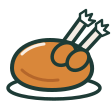
DindeToute l’année- CanardToute l’année
- VeauToute l’année
- LapinToute l’année
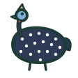
PintadeToute l’année- Steak hachéToute l’année
- MerguezToute l’année
- ChorizoToute l’année
- Boudin noirToute l’année
Poissons et fruits de mer de saison · 19
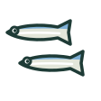
Anchoisd’août à octobre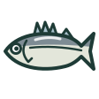
Barde novembre à décembre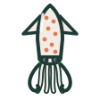
Calmar (encornet)d’août à mars- Chinchardde février à juin
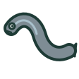
Congred’octobre à avril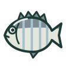
Dorade grisede juin à mars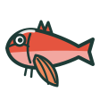
Grondin rougede septembre à mars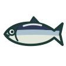
Harengd’avril à septembre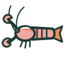
Langoustinede mars à août- Limande-solede septembre à octobre
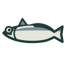
Merlu (colin)de mars à juillet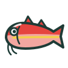
Rouget-barbetde septembre à décembre- Saint-Jacquesd’octobre à mai
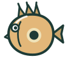
Saint-Pierred’avril à juillet Sardinede mai à octobre
Sardinede mai à octobre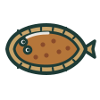
Solede septembre à novembre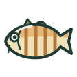
Tacaudde mai à novembre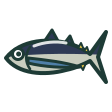
Thon blanc (germon)de mai à septembre- Thon rouged’août à décembre
Poissons et fruits de mer de toute l’année · 13
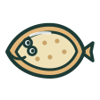
CardineToute l’année- CrabeToute l’année
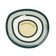
HuîtreToute l’année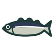
Lieu noirToute l’année- Lotte (baudroie)Toute l’année
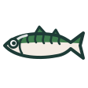
MaquereauToute l’année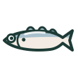
MerlanToute l’année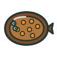
Plie (carrelet)Toute l’année- PoulpeToute l’année
- RaieToute l’année
- RoussetteToute l’année
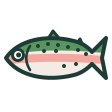
TruiteToute l’année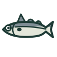
ÉglefinToute l’année